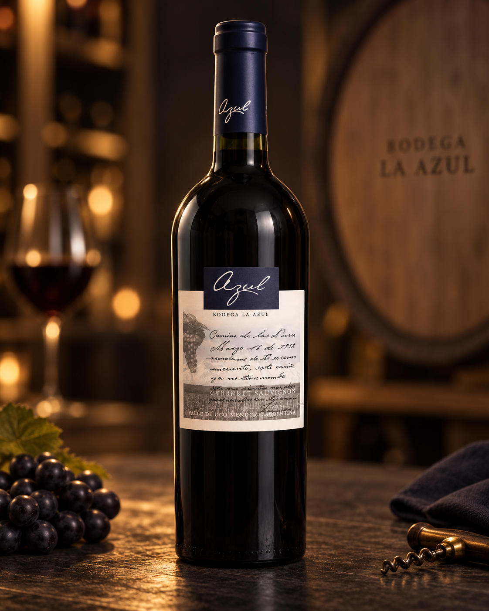

La Azul
Cabernet Sauvignon
Valle de Uco, Mendoza, Argentina
👁️ Vista
Color rojo rubí profundo con matices violáceos. De aspecto brillante, limpio y con buena intensidad visual.
👃 Nariz
Aromas intensos y expresivos, con presencia de frutos negros maduros como cassis, ciruelas y moras, acompañados por notas especiadas, leves toques herbales y delicados matices de vainilla y cacao.
👄 Boca
En boca se muestra estructurado, firme y elegante. Presenta taninos marcados pero maduros, buen cuerpo, acidez equilibrada y un final persistente, con recuerdos de fruta negra y especias.
Ideal para acompañar carnes rojas, asados, pastas con salsas intensas, empanadas de carne, quesos semiduros y tablas gourmet.
16°C a 18°C
Consejo: Si hace mucho calor, podés refrescarlo entre 15 y 20 minutos antes de servir. Evitá servirlo demasiado caliente para no resaltar en exceso el alcohol, y tampoco demasiado frío para que no se oculten sus aromas y estructura.
Bodega La Azul está ubicada en el corazón del Valle de Uco, Mendoza, una de las regiones vitivinícolas más prestigiosas de Argentina. Su propuesta combina identidad, terroir y elaboración cuidada, dando lugar a vinos con carácter, personalidad y excelente expresión varietal.